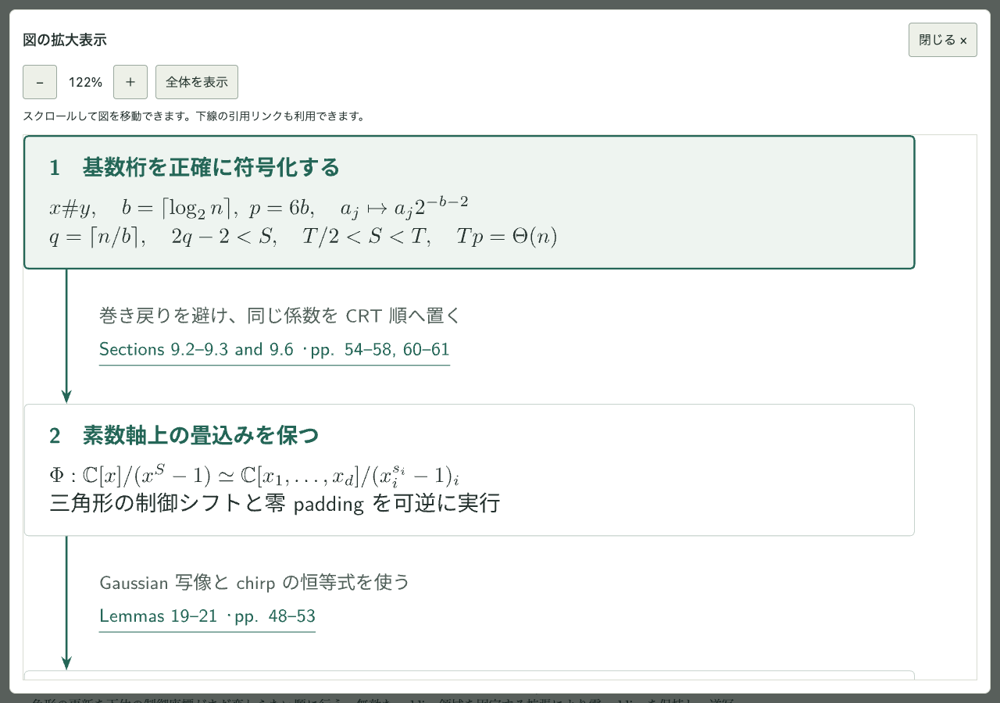
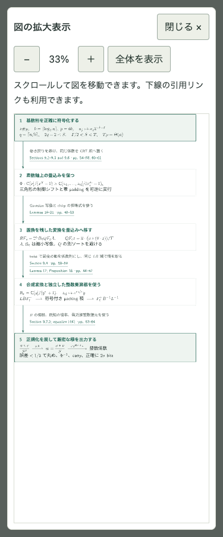
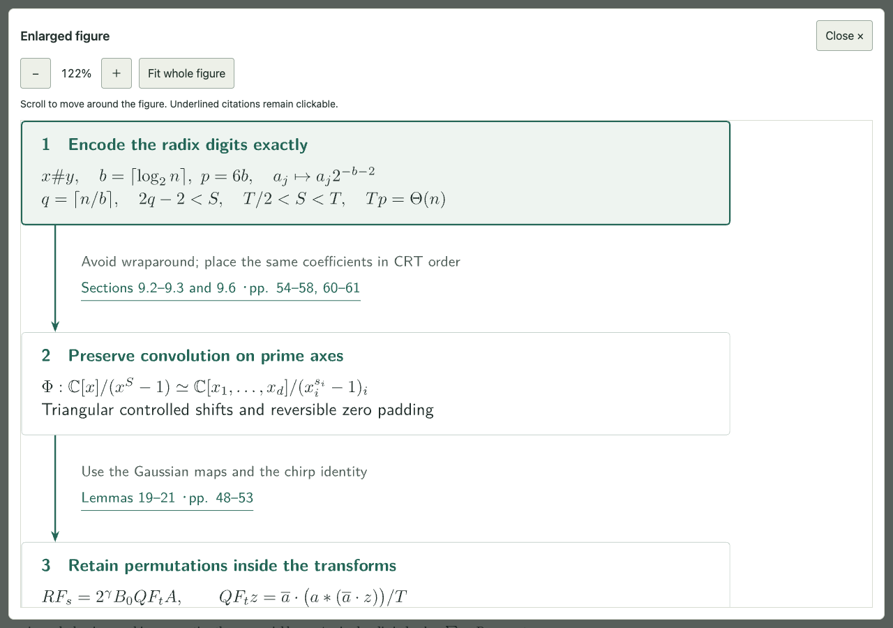
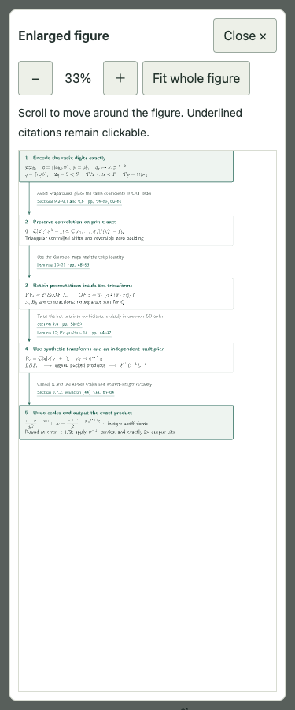

カタログ 109 の画面検査
automated-checks-passed · 14表示条件
自動検査とスクリーンショットの記録です。数式や図の意味、文字の重なり、読みやすさは目視してください。画像を開くと原寸で確認できます。
見本ページはPC幅のみ。PDFの紙面検査は含みません。JSON記録
ja / 1280px / catalog/109/ — pass
ja / 1280px / papers/integer-multiplication-below-n-log-n/ — pass

ja / 375px / papers/integer-multiplication-below-n-log-n/ — pass

en / 1280px / papers/integer-multiplication-below-n-log-n/ — pass

en / 375px / papers/integer-multiplication-below-n-log-n/ — pass

ja / 1280px / catalog/034/ （見本） — pass
en / 1280px / catalog/034/ （見本） — pass
ja / 1280px / papers/schnell-fiber-spaces/ （見本） — pass
en / 1280px / papers/schnell-fiber-spaces/ （見本） — pass
ja / 1280px / papers/orbifold-logarithmic-iitaka/ （見本） — pass
en / 1280px / papers/orbifold-logarithmic-iitaka/ （見本） — pass